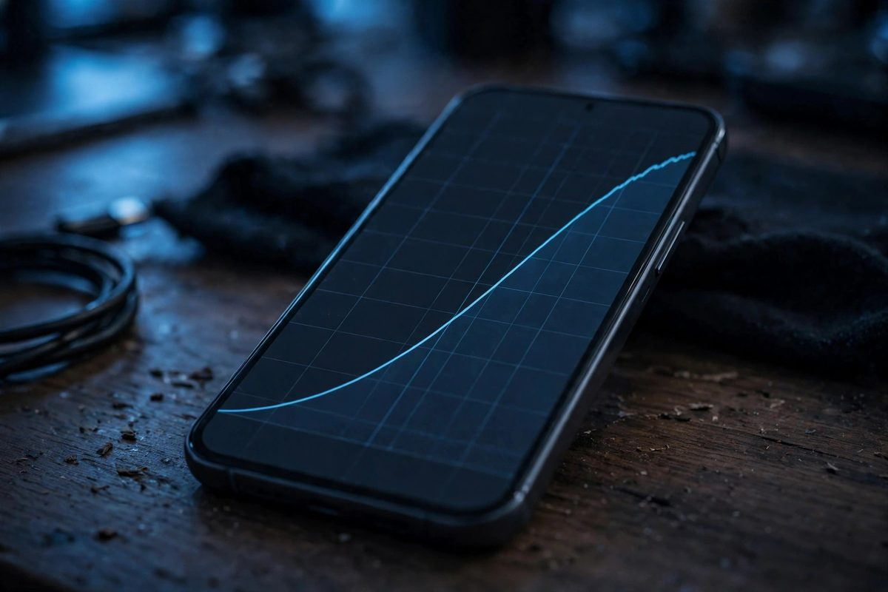

Frequency Sweep Explained: What It Does to Your Speaker

You have probably seen speaker cleaning apps and websites that promise to eject water and dust using sound. At the heart of most of them is a technique called a frequency sweep. It sounds technical, but the idea is simple: the phone plays a tone that gradually rises or falls in pitch, and the changing vibrations shake the speaker in a way that helps loosen whatever is sitting on or inside the grille. This guide explains how it works, when it helps, and where its limits are.
What Is a Frequency Sweep?
A frequency sweep is a sound that moves smoothly through a range of pitches over a set period of time. Instead of playing one fixed note, the speaker plays a tone that starts low, perhaps around 100 hertz, and climbs steadily up to several thousand hertz, or the other way around. Frequency is measured in hertz, and it describes how many times per second the speaker cone moves back and forth. Low frequencies make the cone move slowly with large movements, while high frequencies make it move very quickly with small movements.
Because the sweep covers many frequencies in one run, it excites the speaker cone in many different ways. Some frequencies make the cone vibrate more strongly than others, and these peaks of movement are what do the useful work. Dust particles resting on the grille get shaken loose, and small water droplets can be vibrated out of the speaker cavity. The sweep is the same basic principle behind the water-eject feature built into some smartwatches, which plays a special tone to push water out of the speaker after swimming.
How a Sweep Helps Clean a Speaker
Inside your phone, the speaker cone sits just behind the grille. When dust builds up on the grille or inside the small chamber in front of the cone, it muffles the sound. Playing a sweep at full volume forces the cone to move as far as it safely can, and that movement creates air pressure changes that can push loose particles outward. If water has entered the speaker, the same vibrations can break the surface tension holding droplets in place and help them escape through the grille holes.
For best results, place the phone speaker side down on a clean, dry cloth before starting the sweep. Gravity then works with the vibrations, so anything that is shaken loose falls out instead of settling back inside. Run the sweep for thirty to sixty seconds and repeat it two or three times if needed. You can try our free speaker cleaner tool, which plays a controlled sweep designed for this purpose, or experiment with individual tones using our frequency generator to find which pitch seems to move the most debris on your phone.
Why Low Frequencies Matter Most
Low frequencies are the most useful part of a sweep for cleaning. A low tone such as 100 to 300 hertz makes the speaker cone move with large, visible excursions, and those large movements generate the strongest air pressure changes. High frequencies still vibrate the cone, but the movements are tiny and do less physical work on trapped dust or water. This is why a good cleaning sweep usually starts low and spends enough time in the bass range before climbing higher.
That said, the sweep as a whole is more effective than a single fixed tone, because different phones and different types of debris respond to different frequencies. A fixed 165 hertz tone might work well on one phone and poorly on another, while a sweep covers the whole useful range and gives every part of the speaker a chance to vibrate at its strongest. If you are using the frequency generator manually, try holding a low tone for ten seconds, then sweeping upward slowly, and finish with a few seconds of a mid-range tone.
What a Frequency Sweep Cannot Fix
It is important to be clear about the limits. A frequency sweep cannot fix hardware damage, a blown speaker, or water-damaged components. If the speaker cone is torn, the voice coil is damaged, or corrosion has formed on the internal contacts after water exposure, no sound can repair that. The sweep only moves things that are loose. It does not clean corrosion, restore a damaged membrane, or fix a speaker that has stopped working because of an electrical fault.
Be cautious of any app or website that guarantees a sweep will fix your speaker. If the sound is distorted, crackling, or absent after several cleaning attempts, the problem is almost certainly physical or electrical, and a repair shop is the right next step. Running a sweep for a long time at maximum volume will not help a damaged speaker and could, in extreme cases, stress an already weakened component. Use short runs of a minute or less, with breaks in between.
Is a Frequency Sweep Safe for Your Phone?
Yes, when used sensibly. Phone speakers are designed to play loud sounds, including low-frequency tones, and a short sweep at full volume is well within what the hardware is built to handle. The main risks come from misuse: running a sweep continuously for many minutes, or playing extremely low frequencies at maximum volume for long periods, can heat the speaker coil and wear it out faster. Keep your cleaning sessions short, give the speaker a rest between runs, and stop immediately if you hear rattling or distortion that was not there before. That sound usually means the speaker is already damaged and needs professional attention.
Frequently Asked Questions
How long should a frequency sweep run?
Thirty to sixty seconds per run is enough. Repeat it two or three times with short breaks if the first run helps but does not fully clear the speaker. Longer sessions do not clean better and only add wear to the speaker.
Can a frequency sweep remove water from my phone?
It can help eject small amounts of water trapped in the speaker grille and chamber, especially if the water exposure was recent. It cannot dry out water that has reached the internal components, and it cannot undo corrosion. If your phone was submerged, power it off and seek professional help rather than relying on sound alone.
Why does my speaker sound worse right after a sweep?
This sometimes happens when a sweep loosens debris but does not fully eject it, leaving particles in a worse position. Run the sweep again with the phone speaker side down on a cloth, then brush the grille gently. If the problem persists, see our guide on how to fix a crackling phone speaker.